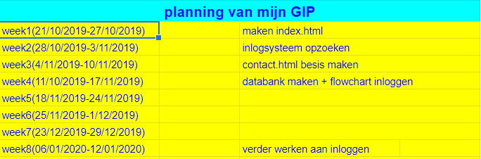
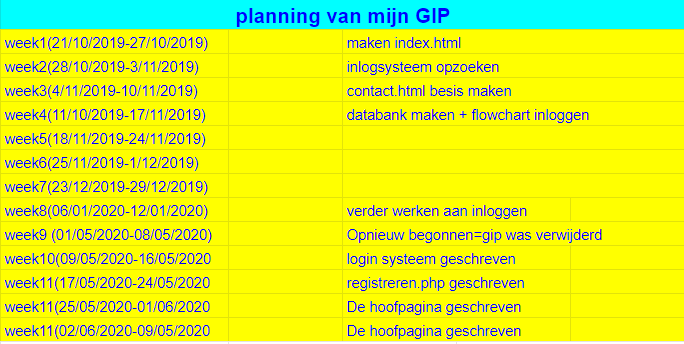

Er was mij gevraagd om een website te maken die ervoor zorgt dat het secretariaat de afwezigheden van leerkrachten kan ingeven. Dit was het centrale deel. Dit heb ik kunnen doen maar de uitbreidingen heb ik niet gedaan. Ik moest ook nog afwezigheidslijsten maken voor de leerlingen in de studie, dit vond ik echter te moeilijk door de verbinding met smartschool
Ik had nog steeds de planning van januari en heb geen andere planning gemaakt
